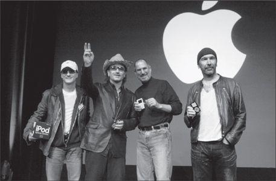

Jimmy Iovine, Bono, Jobs, and The Edge, 2004
As the iPod phenomenon grew, it spawned a question that was asked of presidential candidates, B-list celebrities, first dates, the queen of England, and just about anyone else with white earbuds: “What’s on your iPod?” The parlor game took off when Elisabeth Bumiller wrote a piece in the New York Times in early 2005 dissecting the answer that President George W. Bush gave when she asked him that question. “Bush’s iPod is heavy on traditional country singers,” she reported. “He has selections by Van Morrison, whose ‘Brown Eyed Girl’ is a Bush favorite, and by John Fogerty, most predictably ‘Centerfield.’” She got a Rolling Stone editor, Joe Levy, to analyze the selection, and he commented, “One thing that’s interesting is that the president likes artists who don’t like him.”
随着iPod现象越来越热，从总统候选人、二线明星、到初次约会的人、英国女王，只要是戴着白色耳机的人，见面时都会被问到这样一个问题：“你的iPod里面有什么歌？”这个热门话题开始于《纽约时报》记者伊丽莎白·布米勒（ElisabethBumiUer）在2005年初写的一篇文章。文章是分析时任美国总统的乔治·W·布什（GeorgeW.Bush）在被问到这个问题时的回答。她写道：“布什的iPod里面大部分都是传统的乡村音乐。其中包括范·莫里森（VanMorrison），他的那首《棕色眼睛的女孩》（BrownEyedGirl）是布什的最爱；还有约翰·弗格迪（JohnFogerty）那首主打曲《中外场》（Centerfield）。”她还找来《滚石》杂志的编辑斯蒂芬·列维分析布什的歌单。列维评论道：“有趣的地方在于总统喜欢的歌手都不喜欢他。”
“Simply handing over your iPod to a friend, your blind date, or the total stranger sitting next to you on the plane opens you up like a book,” Steven Levy wrote in The Perfect Thing. “All somebody needs to do is scroll through your library on that click wheel, and, musically speaking, you’re naked. It’s not just what you like—it’s who you are.” So one day, when we were sitting in his living room listening to music, I asked Jobs to let me see his. As we sat there, he flicked through his favorite songs.
史蒂文·列维在《完美之物》（ThePerfectThing）一书中写道：“只要把你的iPod交给一个朋友、你初次约会的人，或者是飞机上那个坐在你身旁的陌生人，你就像一本书一样被打开了。所有人只需要用转盘浏览一遍你的歌曲库，从音乐角度上说，你就一丝不挂了。暴露的不仅仅是你的喜好——而是你是一个怎样的人。”所以，有一天，当我和乔布斯坐在他家的客厅里听音乐时，我让乔布斯给我看看他的iPod。他给了我一部他在2004年装满了音乐的iPod。
Not surprisingly, there were all six volumes of Dylan’s bootleg series, including the tracks Jobs had first started worshipping when he and Wozniak were able to score them on reel-to-reel tapes years before the series was officially released. In addition, there were fifteen other Dylan albums, starting with his first, Bob Dylan (1962), but going only up to Oh Mercy (1989). Jobs had spent a lot of time arguing with Andy Hertzfeld and others that Dylan’s subsequent albums, indeed any of his albums after Blood on the Tracks (1975), were not as powerful as his early performances. The one exception he made was Dylan’s track “Things Have Changed” from the 2000 movie Wonder Boys. Notably his iPod did not include Empire Burlesque (1985), the album that Hertzfeld had brought him the weekend he was ousted from Apple.
不出所料，这里面有迪伦的所有6张系列合辑，包括多年前在乔布斯刚刚迷上迪伦时，和沃兹尼亚克用磁带录下来的那几首当时尚未正式发行的歌曲。另外还有15张迪伦的其他专辑，从1962年的第一张《鲍勃·迪伦》开始，到1989年的《噢，仁慈》（OhMercy）。乔布斯花了很多时间和安迪·赫茨菲尔德及其他人争论迪伦后来的专辑——事实上，自从1975年的《路上的血迹》之后，迪伦的表现就不如从前了。但有一个例外就是2000年的电影《天才小子》（WonderBoys）中的插曲《一切都已改变》（ThingsHaveChanged）。不过，他的iPod里没有1985年的《皇帝讽刺剧》，这是赫茨菲尔德在乔布斯被赶出苹果的那个周末送给他的专辑。
The other great trove on his iPod was the Beatles. He included songs from seven of their albums: A Hard Day’s Night, Abbey Road, Help!, Let It Be, Magical Mystery Tour, Meet the Beatles! and Sgt. Pepper’s Lonely Hearts Club Band. The solo albums missed the cut. The Rolling Stones clocked in next, with six albums: Emotional Rescue, Flashpoint, Jump Back, Some Girls, Sticky Fingers, and Tattoo You. In the case of the Dylan and the Beatles albums, most were included in their entirety. But true to his belief that albums can and should be disaggregated, those of the Stones and most other artists on his iPod included only three or four cuts. His onetime girlfriend Joan Baez was amply represented by selections from four albums, including two different versions of “Love Is Just a Four-Letter Word.”
他的那只iPod里的另一部分珍藏是被头士，包括7张专辑：《一夜狂欢》（AHardDay-sNight）、《艾比路》（AbbeyRoad）、《救我！》（Help!）、《顺其自然》（LetItBe）、《魔法神秘之旅》（MagicalMysteryTour）、《遇见披头士》（MeettheBeatles!）,以及《佩拍中士孤心俱乐部乐队》（Sgt.Pepper-sLonelyHeartsClubBand）。独唱专辑没有收录其中。接下来是滚石乐队的6张专辑：《情感救援》（EmotionalRescue）、《闪光点》（FlashPoint）、《“跳回去”精选大碟》（JumpBack）,《一些女孩》（SomeGirls）、《手指冒汗》（StickyFingers），以及《为你文身》（TattooYou）。对于迪伦和披头士的专辑来说，乔布斯放进去的几乎都是整张专辑，但是他也认为专辑可以并且应该被拆分，在他的iPod里，滚石乐队和其他歌手都是每张专辑收录了三四首歌。此外，他的播放列表里还有曾经的女友琼·贝兹的歌，是从4张专辑中挑选出来的，其中有两首不同版本的《爱就那么回事》（LoveIsJustaFourLetterWord）。
His iPod selections were those of a kid from the seventies with his heart in the sixties. There were Aretha, B. B. King, Buddy Holly, Buffalo Springfield, Don McLean, Donovan, the Doors, Janis Joplin, Jefferson Airplane, Jimi Hendrix, Johnny Cash, John Mellencamp, Simon and Garfunkel, and even The Monkees (“I’m a Believer”) and Sam the Sham (“Wooly Bully”). Only about a quarter of the songs were from more contemporary artists, such as 10,000 Maniacs, Alicia Keys, Black Eyed Peas, Coldplay, Dido, Green Day, John Mayer (a friend of both his and Apple), Moby (likewise), U2, Seal, and Talking Heads. As for classical music, there were a few recordings of Bach, including the Brandenburg Concertos, and three albums by Yo-Yo Ma.
这只iPod中的歌曲反映出他的主人是一个生活在20世纪70年代但心却埋在60年代的孩子。那个时候的艺术家包括了艾瑞莎（Aretha）、比比金（B.B.King）、巴迪·霍利（BuddyHolly）、布法罗.斯普林菲尔德乐队（BuffaloSpringfield）、唐·马克林（DonMclean）、多诺万（Donovan）、大门乐队（TheDoors）,詹尼斯·乔普林、杰弗逊飞船乐队、吉米·亨德里克斯、约翰尼·卡什、约翰·麦文盖博（JohnMellencamp）、西蒙和加芬克尔（Simon&Garfunkel）,甚至还有演奏《我是一个信徒》（I-maBeliever）的门基乐队（TheMonkees）,以及演奏《乌利布利》（WoolyBulfy）的SamtheSham。只有1/4的歌曲出自当时的流行歌手，比如一万个骗子乐队（10000Maniacs）、阿丽西無·吉丝（AlidaKeys）、黑眼豆豆、酷玩乐队、蒂呆（Dido）,绿日乐队（GreenDay）、约翰·梅尔（JohnMayer,既是乔布斯也是苹果的朋友）、莫比（Moby，同上），以及波诺和U2乐队（同上）、席尔，还有“会说话的头”朋克乐队（TalkingHeads）。古典音乐方面，有一些巴赫的曲目，包括《勃兰登堡协奏曲》。此外还有3张马友友的专辑。
Jobs told Sheryl Crow in May 2003 that he was downloading some Eminem tracks, admitting, “He’s starting to grow on me.” James Vincent subsequently took him to an Eminem concert. Even so, the rapper missed making it onto Jobs’s iPod. As Jobs said to Vincent after the concert, “I don’t know . . .” He later told me, “I respect Eminem as an artist, but I just don’t want to listen to his music, and I can’t relate to his values the way I can to Dylan’s.”
2003年5月，乔布斯告诉雪儿·克罗他正在下载一些艾米纳姆的歌曲，还说“他已经开始进入我的生活了”。詹姆斯·文森特还带他去看了艾米纳姆的演唱会。即便如此，乔布斯也没有把这个说唱歌手放进他的播放列表里。在演唱会结束后，乔布斯和文森特说：“我不知道……”他后来告诉我，“艾米纳姆是我欣赏的一个艺术家，但我只是不想听他的歌，他不能让我产生像我对迪伦那样的共鸣/所以，乔布斯2004年的音乐收藏并不是最新潮的，但却是他生命中的音乐轨迹，20世纪50年代出生的人会与之产生共鸣，甚至非常欣赏。
His favorites did not change over the years. When the iPad 2 came out in March 2011, he transferred his favorite music to it. One afternoon we sat in his living room as he scrolled through the songs on his new iPad and, with a mellow nostalgia, tapped on ones he wanted to hear.
在他装满那个iPod七年之后，他的喜好并没有太大改变。2011年3月，iPad2面市时，他把他喜欢的音乐转存到了里面。一天下午，我和他坐在他家的客厅，他的手指在全新的iPad上滑动，带着一种怀旧的情绪，点击着他想听的歌曲。
We went through the usual Dylan and Beatles favorites, then he became more reflective and tapped on a Gregorian chant, “Spiritus Domini,” performed by Benedictine monks. For a minute or so he zoned out, almost in a trance. “That’s really beautiful,” he murmured. He followed with Bach’s Second Brandenburg Concerto and a fugue from The Well-Tempered Clavier. Bach, he declared, was his favorite classical composer. He was particularly fond of listening to the contrasts between the two versions of the “Goldberg Variations” that Glenn Gould recorded, the first in 1955 as a twenty-two-year-old little-known pianist and the second in 1981, a year before he died. “They’re like night and day,” Jobs said after playing them sequentially one afternoon. “The first is an exuberant, young, brilliant piece, played so fast it’s a revelation. The later one is so much more spare and stark. You sense a very deep soul who’s been through a lot in life. It’s deeper and wiser.” Jobs was on his third medical leave that afternoon when he played both versions, and I asked which he liked better. “Gould liked the later version much better,” he said. “I used to like the earlier, exuberant one. But now I can see where he was coming from.”
我们先听了一些迪伦和披头士的歌，然后他似乎心事重重，选择了一首格林高利圣味——《主的灵》（SpiritusDomini），是由本笃会僧侣合唱团（Benedictinemonks）演唱的。他恍惚出神了一会儿，喃喃自语着：“简直太美了。”之后，他播放了巴赫的《F大调勃兰登堡协奏曲》和《十二平均律曲集》中的一段赋格曲。他说，巴赫是他最喜欢的古典音乐家。他尤其热衷于比较格伦·古尔德（GlennGould）弹奏录制的两个版本的《戈登堡变奏曲》之间的区别。古尔德第一次录制是在1955年，当时他刚22岁，还是个没什么名气的小钢琴师；1981年第二次录制时，距离古尔德去世仅一年时间。在一个下午，乔布斯在按顺序播放完两个版本的《戈登堡变奏曲》后说道：“它们就像白天与黑夜。第一版热情洋溢、年轻有活力，弹奏速度很快，像是神示；而第二个版本更加简洁，主题鲜明。你可以感受到一个经历丰富的灵魂，更加深沉而充满智慧。”那天是乔布斯第三次休病假期间，我问他更喜欢哪个版本。他说：“古尔德本人更喜欢第二版。我以前喜欢早期的版本，有活力的那一版。但是现在我能感受到他在两次演奏之间所经历的一切。”
He then jumped from the sublime to the sixties: Donovan’s “Catch the Wind.” When he noticed me look askance, he protested, “Donovan did some really good stuff, really.” He punched up “Mellow Yellow,” and then admitted that perhaps it was not the best example. “It sounded better when we were young.”
然后他从宏伟的古典乐跳到了20世纪60年代，播放了多诺万的《捕风》（CatchtheWind）。当看到我面露疑惑，他说：“多诺万真的有些好作品，真的。”他切换到了《柔美之黄》（MeHcmYellow），但他后来也说这首歌也许不是最好的证明。“我们年轻时觉得它更好听。”
I asked what music from our childhood actually held up well these days. He scrolled down the list on his iPad and called up the Grateful Dead’s 1969 song “Uncle John’s Band.” He nodded along with the lyrics: “When life looks like Easy Street, there is danger at your door.” For a moment we were back at that tumultuous time when the mellowness of the sixties was ending in discord. “Whoa, oh, what I want to know is, are you kind?”
我问他，有哪些我们童年时代的歌曲到如今都历久弥新。他浏览了iPod的播放列表，找到了感恩而死乐队1969年的歌曲《约翰叔叔的乐队》（UncleJohn-sBand）。他随着旋律点头轻唱起来：“当生活看起来很简单时，危险正在你门外……”一时间，我们回到了那个躁动的、在冲突中戛然而止的60年代。“喔一哦，我想知道的是你还善良吗？”
Then he turned to Joni Mitchell. “She had a kid she put up for adoption,” he said. “This song is about her little girl.” He tapped on “Little Green,” and we listened to the mournful melody and lyrics that describe the feelings of a mother who gives up a child. “So you sign all the papers in the family name / You’re sad and you’re sorry, but you’re not ashamed.” I asked whether he still often thought about being put up for adoption. “No, not much,” he said. “Not too often.”
然后，他换到了琼尼·米雪儿（JoniMitchell）。他说：“她把她的女儿送给别人收养了。这首歌就是关于这个女孩的。”他播放了《小小格林》（LittleGreen），我们听着那悲伤的旋律和歌词：“你用你的新姓氏签订所有的文件，你觉得悲伤而遗憾，但是你不必羞愧。小格林，希望你有个美好的未来。”我问乔布斯是否还会经常想起自己被收养的事情。他说：“不，不怎么想。不太常想起。”
These days, he said, he thought more about getting older than about his birth. That led him to play Joni Mitchell’s greatest song, “Both Sides Now,” with its lyrics about being older and wiser: “I’ve looked at life from both sides now, / From win and lose, and still somehow, / It’s life’s illusions I recall, / I really don’t know life at all.” As Glenn Gould had done with Bach’s “Goldberg Variations,” Mitchell had recorded “Both Sides Now” many years apart, first in 1969 and then in an excruciatingly haunting slow version in 2000. He played the latter. “It’s interesting how people age,” he noted.
他说，那段日子，他想的更多的是关于成长，而不是自己的身世。这时他选择了琼尼·米雪儿最著名的一首歌《正反两面》（BothSidesNow），歌词是关于成长和智慧：“现在我看人生，看得到两面。看到得与失，却仍然迷惘。那时以为的人生，也许是幻象。人生啊，我真的不知道。”就像格伦·古尔德先后两次录制《戈登堡变奏曲》一样，米雪儿也在很多年之后重新录制了《正反两面》，在1969年的第一版之后，她又在2000年录了一个哀伤婉转的版本。他播放了第二版，并说道：“人们变老的过程真是有趣。”
Some people, he added, don’t age well even when they are young. I asked who he had in mind. “John Mayer is one of the best guitar players who’s ever lived, and I’m just afraid he’s blowing it big time,” Jobs replied. Jobs liked Mayer and occasionally had him over for dinner in Palo Alto. When he was twenty-seven, Mayer appeared at the January 2004 Macworld, where Jobs introduced GarageBand, and he became a fixture at the event most years. Jobs punched up Mayer’s hit “Gravity.” The lyrics are about a guy filled with love who inexplicably dreams of ways to throw it away: “Gravity is working against me, / And gravity wants to bring me down.” Jobs shook his head and commented, “I think he’s a really good kid underneath, but he’s just been out of control.”
他还补充道，有一些人并没有随着年龄的增长而更成熟。我问他想到了谁。他回答：“约翰·梅尔是世界上最棒的吉他演奏家之一，但是我觉得他挥霍了大把时间，他的生活失控了。”乔布斯很喜欢梅尔，还偶尔请他在帕洛奥图吃晚饭。梅尔在27岁时参加了2004年1月的Macworld大会，当时乔布斯介绍了GarageBand录音软件。自那之后，梅尔就成了Macworld大会的常客。乔布斯点击了梅尔最重谤的歌曲《地心引力》（Gravity），歌词是关于一个充满爱的男人梦想着丢掉地心弓丨力的方法：“地心引力正在和我作对；地心引力要让我倒下乔布斯摇着头评价道：“我觉得他本质上是一个很好的孩子，他只是失控了。”
At the end of the listening session, I asked him a well-worn question: the Beatles or the Stones? “If the vault was on fire and I could grab only one set of master tapes, I would grab the Beatles,” he answered. “The hard one would be between the Beatles and Dylan. Somebody else could have replicated the Stones. No one could have been Dylan or the Beatles.” As he was ruminating about how fortunate we were to have all of them when we were growing up, his son, then eighteen, came in the room. “Reed doesn’t understand,” Jobs lamented. Or perhaps he did. He was wearing a Joan Baez T-shirt, with the words “Forever Young” on it.
在听歌环节的最后，我问了他一个早就被问滥了的问题：“如果披头士和滚石乐队二选一，你会选哪个？”他回答：“如果地下室着火了，我只能救出一套碟片，我想我会拿披头士的。但是更难的选择是在披头士和迪伦之间。有些人复制了滚石，但是没有人能复制迪伦或披头士。”当他正在沉思我们是何等幸运、能在成长道路上听到这么棒的音乐时，他18岁的儿子走进了房间。乔布斯感叹道：“里德是不会理解的。”又或许里德能理解一些。他正穿着印有琼·贝兹的T恤衫，上面写着“永远年轻”（ForeverYoung）。
The only time Jobs can ever recall being tongue-tied was in the presence of Bob Dylan. He was playing near Palo Alto in October 2004, and Jobs was recovering from his first cancer surgery. Dylan was not a gregarious man, not a Bono or a Bowie. He was never Jobs’s friend, nor did he care to be. He did, however, invite Jobs to visit him at his hotel before the concert. Jobs recalled:
在乔布斯的记忆中，唯一让他紧张得舌头打结的时刻就是见到鲍勃·迪伦。2004年10月，迪伦在帕洛奥图附近演出，当时乔布斯正处在第一次癌症手术后的恢复期。迪伦不是一个爱社交的人，不是波诺和鲍伊（Bowie）那样的人。迪伦从来都不能被称为是乔布斯的朋友，而且他也不在乎是或不是。不过，他曾邀请乔布斯在演唱会之前在他住的酒店见面。乔布斯回忆道：
We sat on the patio outside his room and talked for two hours. I was really nervous, because he was one of my heroes. And I was also afraid that he wouldn’t be really smart anymore, that he’d be a caricature of himself, like happens to a lot of people. But I was delighted. He was as sharp as a tack. He was everything I’d hoped. He was really open and honest. He was just telling me about his life and about writing his songs. He said, “They just came through me, it wasn’t like I was having to compose them. That doesn’t happen anymore, I just can’t write them that way anymore.” Then he paused and said to me with his raspy voice and little smile, “But I still can sing them.”
The next time Dylan played nearby, he invited Jobs to drop by his tricked-up tour bus just before the concert. When Dylan asked what his favorite song was, Jobs said “One Too Many Mornings.” So Dylan sang it that night. After the concert, as Jobs was walking out the back, the tour bus came by and screeched to a stop. The door flipped open. “So, did you hear my song I sang for you?” Dylan rasped. Then he drove off. When Jobs tells the tale, he does a pretty good impression of Dylan’s voice. “He’s one of my all-time heroes,” Jobs recalled. “My love for him has grown over the years, it’s ripened. I can’t figure out how he did it when he was so young.”
我们坐在他房间外面的露台上，谈了两个小时。我真的非常紧张，因为他是我心目中的英雄之一。而且我也怕他本人不像我想象中那么聪明，或者他只是在“模仿”自已，就像很多人那样。但是我很高兴，因为他说话入木三分，他的一切都和我想象的一样。他非常开朗和真诚。他和我谈论他的生活，谈论写歌的过程。他说：“有时一些旋律就那么来了，我并不是刻意要作出曲子来。那样的事不会再有了，我怎么都不能再那样写曲子了。”他停顿了一下，然后用他沙哑的嗓音微笑着对我说：“但是我还是会哼出这些调调。”
迪伦再一次到附近演出时，他邀请乔布斯在演出前到他乘的旅行车上来坐坐。他问乔布斯最喜欢什么歌，乔布斯提到了《多余的清晨》（OneToManyMornings）,于是迪伦当晚就唱了这首歌。演出结束后，乔布斯走在回家的路上，一辆旅行车驶过他身旁，发出了剌耳的刹车声，车门滑开了，“喂，你听到我为你唱的歌了吗？”依旧是迪伦沙哑的声音。然后车就开走/。当乔布斯讲到这段故事的时候，他表示非常欣赏迪伦的嗓音。他回忆道：“他是我心目中经久不衰的英雄之一。我对他的喜變随着时间而生长，现在已经成熟。我无法想象他在那么年轻时就取得了成功。”
A few months after seeing him in concert, Jobs came up with a grandiose plan. The iTunes Store should offer a digital “boxed set” of every Dylan song every recorded, more than seven hundred in all, for $199. Jobs would be the curator of Dylan for the digital age. But Andy Lack of Sony, which was Dylan’s label, was in no mood to make a deal without some serious concessions regarding iTunes. In addition, Lack felt the price was too low and would cheapen Dylan. “Bob is a national treasure,” said Lack, “and Steve wanted him on iTunes at a price that commoditized him.” It got to the heart of the problems that Lack and other record executives were having with Jobs: He was getting to set the price points, not them. So Lack said no.
在演唱会见到迪伦之后的几个月，乔布斯想到了一个伟大的计划。iTunes商店将推出一套迪伦的打包专辑，里面收录了迪伦的每一首歌曲，总共超过700首，售价199美元。乔布斯将成为迪伦进军数字时代的监护人。但是迪伦的唱片公司属于索尼，而索尼的安迪·拉克对这笔生意并不感兴趣，除非iTunes作出一些让步。另外，拉克认为199美元的价格太低了，贬低了迪伦的价值。拉克说：“鲍勃是国家级的珍宝，而乔布斯要把他的作品以一个低价放进iTunes，把他商品化。”这就触及了拉克和其他唱片业高层人士与乔布斯争论的核心：是乔布斯成了价格制定者，而不是他们。所以拉克拒绝了乔布斯的合作建议。
“Okay, then I will call Dylan directly,” Jobs said. But it was not the type of thing that Dylan ever dealt with, so it fell to his agent, Jeff Rosen, to sort things out.
乔布斯说：“那好吧，我直接给迪伦打电话。”但是迪伦也没有处理过类似事件，所以他交给他的助理杰夫·罗森（JeffRosen）来处理。
“It’s a really bad idea,” Lack told Rosen, showing him the numbers. “Bob is Steve’s hero. He’ll sweeten the deal.” Lack had both a professional and a personal desire to fend Jobs off, even to yank his chain a bit. So he made an offer to Rosen. “I will write you a check for a million dollars tomorrow if you hold off for the time being.” As Lack later explained, it was an advance against future royalties, “one of those accounting things record companies do.” Rosen called back forty-five minutes later and accepted. “Andy worked things out with us and asked us not to do it, which we didn’t,” he recalled. “I think Andy gave us some sort of an advance to hold off doing it.”
“这真的是个坏主意。”拉克对罗森说，并向他展示了一些数字。“鲍勃是史蒂夫的偶像，史蒂夫会给他开出更高的价钱。”无论是从生意还是从个人角度出发，拉克都不想让乔布斯得逞，甚至还想借机将他一军。所以他私下里和罗森达成协议：“如果你能暂时拖延一下乔布斯，我明天会给你100万美元的支票。”拉克后来解释说，这笔钱只不过是抵扣后续版税的预付金而已：“是很多唱片公司的一项财务处理程序罢了。”罗森在45分钟之后回了电话，接受了拉克的提议。他回忆道：“安迪和我们一起解决了此事，并请求我们不要和乔布斯合作，我们同意了。我想这是安迪给了我们一笔预付版税。”
By 2006, however, Lack had stepped aside as the CEO of what was by then Sony BMG, and Jobs reopened negotiations. He sent Dylan an iPod with all of his songs on it, and he showed Rosen the type of marketing campaign that Apple could mount. In August he announced a grand deal. It allowed Apple to sell the $199 digital boxed set of all the songs Dylan ever recorded, plus the exclusive right to offer Dylan’s new album, Modern Times, for pre-release orders. “Bob Dylan is one of the most respected poets and musicians of our time, and he is a personal hero of mine,” Jobs said at the announcement. The 773-track set included forty-two rarities, such as a 1961 tape of “Wade in the Water” made in a Minnesota hotel, a 1962 version of “Handsome Molly” from a live concert at the Gaslight Café in Greenwich Village, the truly awesome rendition of “Mr. Tambourine Man” from the 1964 Newport Folk Festival (Jobs’s favorite), and an acoustic version of “Outlaw Blues” from 1965.
不过，到2006年，拉克卸任索尼BMG的CEO，乔布斯开始了新一轮谈判。他寄给迪伦一台iPod，里面装着迪伦所有的歌曲，然后他向罗森介绍了苹果的营销计划。8月，他宣布了这一重大交易。迪伦允许苹果以199美元的价格打包出售他录制过的所有歌曲，再额外提供他的最新专辑《摩登时代》（ModernTimes）的抢先预定。乔布斯宣布说：“鲍勃·迪伦是我们这个时代最值得尊敬的诗人和音乐家之一，而且他也是我个人的偶像。”这套773首歌的专辑还收录了42首稀有作品，比如：1961年在明尼苏达州的一间酒店录制的《涉水而行》（WadeintheWater）；1962年格林尼治村煤气灯咖啡馆（GaslightCafe）现场音乐会版本的《英俊的莫利》（HandsomeMolly）；1964年纽波特民摇音乐节上现场弹唱的《铃鼓先生》（Mr.TambourineMan），这也是乔布斯最喜欢的一个版本；还有1965年的《歹徒布鲁斯》（OutlawBlues）清唱版本。
As part of the deal, Dylan appeared in a television ad for the iPod, featuring his new album, Modern Times. This was one of the most astonishing cases of flipping the script since Tom Sawyer persuaded his friends to whitewash the fence. In the past, getting celebrities to do an ad required paying them a lot of money. But by 2006 the tables were turned. Major artists wanted to appear in iPod ads; the exposure would guarantee success. James Vincent had predicted this a few years earlier, when Jobs said he had contacts with many musicians and could pay them to appear in ads. “No, things are going to soon change,” Vincent replied. “Apple is a different kind of brand, and it’s cooler than the brand of most artists. We should talk about the opportunity we offer the bands, not pay them.”
作为交易的一部分，迪伦还拍了一部关于iPod的电视广告，并推广他的新专辑《摩登时代》。这是“汤姆·索亚让他的小伙伴帮他给栏杆刷漆”①的一次惊世骇俗的翻版。在过去，让名人做广告需要支付一大笔钱。但是到了2006年，情况完全变了，很多艺人希望出现在iPod广告里，因为这样的曝光更容易走红。詹姆斯·文森特在几年前就预料到了这种情况，当时乔布斯还在想着怎么和一些音乐人联系，并支付给他们拍广告的费用。文森特回答说：“不用着急，情况很快就会变化。苹果是一个与众不同的品牌，甚至比大多数艺人的品牌更酷。我们可以给我们使用的每个乐队准备1000万美元的媒体费用，但是应该先着重和他们谈我们给他们创造的机会，不要急于支付。”
Lee Clow recalled that there was actually some resistance among the younger staffers at Apple and the ad agency to using Dylan. “They wondered whether he was still cool enough,” Clow said. Jobs would hear none of that. He was thrilled to have Dylan.
李·克劳回忆起当时苹果和广告公司的确有一些年轻员工不愿意让迪伦出面做广告。克劳说：“他们都担心他不像以前那么受欢迎了。”乔布斯完全不予理会，能和迪伦合作已经让他激动万分了。
Jobs became obsessed by every detail of the Dylan commercial. Rosen flew to Cupertino so that they could go through the album and pick the song they wanted to use, which ended up being “Someday Baby.” Jobs approved a test video that Clow made using a stand-in for Dylan, which was then shot in Nashville with Dylan himself. But when it came back, Jobs hated it. It wasn’t distinctive enough. He wanted a new style. So Clow hired another director, and Rosen was able to convince Dylan to retape the entire commercial. This time it was done with a gently backlit cowboy-hatted Dylan sitting on a stool, strumming and singing, while a hip woman in a newsboy cap dances with her iPod. Jobs loved it.
乔布斯开始格外关注迪伦广告的每一个细节。罗森飞来库比蒂诺，和乔布斯一起挑选广告里使用的歌曲，最后他们选中了《有一天，宝贝》（SomedayBaby）,克劳先用替身代替迪伦制作了一个样片，乔布斯批准了，然后再派人去纳什维尔让迪伦本人拍摄。但是等正式的片子回来之后，乔布斯又不满意了。他说这不够特别，他想要一个新的风格。所以克劳又请了另一个导演，罗森又说服迪伦重新拍摄。这次沿用了iPod平面广告使用过的剪影风格，轻柔的背光下，迪伦戴着牛仔帽，坐在一张高脚凳上，抱着吉他漫不经心地边弹边唱；另一个镜头中，一个嘻哈风格的女性戴着报童帽、拿着iPod翩翩起舞。乔布斯很喜欢。
The ad showed the halo effect of the iPod’s marketing: It helped Dylan win a younger audience, just as the iPod had done for Apple computers. Because of the ad, Dylan’s album was number one on the Billboard chart its first week, topping hot-selling albums by Christina Aguilera and Outkast. It was the first time Dylan had reached the top spot since Desire in 1976, thirty years earlier. Ad Age headlined Apple’s role in propelling Dylan. “The iTunes spot wasn’t just a run-of-the-mill celebrity-endorsement deal in which a big brand signs a big check to tap into the equity of a big star,” it reported. “This one flipped the formula, with the all-powerful Apple brand giving Mr. Dylan access to younger demographics and helping propel his sales to places they hadn’t been since the Ford administration.”
这则广告体现了iPod营销策略的“光环效应”：它为迪伦赢得了年轻一代的歌迷，就像iPod促进了苹果电脑的销售那样。在这则广告的推动下，迪伦的新专辑在发行后的第一周就跃居“公吿牌”（Billboard）排行榜的第一名，超过了当时人气正旺的克里斯蒂娜·阿奎莱拉（ChristinaAguilera）和说唱组合Outkast。自1976年的《渴望》（Desire）专辑以来，迪伦在30年后再次荣登宝座。《广告时代》（AdAge）杂志刊登了以“苹果对迪伦的推动作用”为题的文章，其中写道：“这次iTunes和迪伦的合作不是通常意义上的‘和明星签协议’，不是大品牌花巨资请一个明星代言那么简单。他们打破了陈规，这次是强大的苹果品牌为迪伦先生开拓了年轻歌迷的市场，并帮助他把专辑卖到了他们自从福特政府时期以来从没有到过的地方。”——
注释：
①《汤姆·索亚历险记》中的一段情节，讲汤姆·索亚是如何利用智慧让小伙伴们帮他刷漆而又得到了许多礼物的故事。
Among Jobs’s prized CDs was a bootleg that contained a dozen or so taped sessions of the Beatles revising “Strawberry Fields Forever.” It became the musical score to his philosophy of how to perfect a product. Andy Hertzfeld had found the CD and made a copy of it for Jobs in 1986, though Jobs sometimes told folks that it had come from Yoko Ono. Sitting in the living room of his Palo Alto home one day, Jobs rummaged around in some glass-enclosed bookcases to find it, then put it on while describing what it had taught him:
在乔布斯珍贵的CD收藏中，有一张是自制的专辑，里面是约翰·列侬和披头士的《永远的草莓地》（StrawberryFieldsForever），有十几个版本。它成为了印证乔布斯追求完美哲学的一组华彩乐章。安迪·赫茨菲尔德找到了这张CD，并在1986年复制了一张送给乔布斯，但乔布斯有时会和同事们说这是小野洋子给他的。一天，我坐在乔布斯帕洛奥图家中的客厅里，乔布斯在几个带有玻璃门的书架上翻腾了一通，把这张CD找了出来，然后播放给我听。他还向我描述了这张CD带给他的感悟：
It’s a complex song, and it’s fascinating to watch the creative process as they went back and forth and finally created it over a few months. Lennon was always my favorite Beatle. [He laughs as Lennon stops during the first take and makes the band go back and revise a chord.] Did you hear that little detour they took? It didn’t work, so they went back and started from where they were. It’s so raw in this version. It actually makes them sound like mere mortals. You could actually imagine other people doing this, up to this version. Maybe not writing and conceiving it, but certainly playing it. Yet they just didn’t stop. They were such perfectionists they kept it going and going. This made a big impression on me when I was in my thirties. You could just tell how much they worked at this.
这是一首复杂的歌曲。最有趣的是看到整个创意的过程，他们反复地修改，直到几个月后才创作出最满意的作品。列侬一直是我最喜欢的披头士成员。（当我们听到第一次录制过程中列侬让乐队暂停，然后重新修改旋律时，乔布斯笑了。）你听到刚才他们绕了一小段吗？但是效果不好，所以他们回去从头开始。这一版非常粗糙，听起来也就是普通人的水准。你其实可以想象，普通人也可以这样做，做到这个水平。不是在写词或构思方面，而是演奏。但是他们没有就此罢休。他们是那么追求完美、精益求精。在我三十几岁时，他们的这种精神给了我很大的影响。你完全可以看到他们为此付出了多少。
They did a bundle of work between each of these recordings. They kept sending it back to make it closer to perfect. [As he listens to the third take, he points out how the instrumentation has gotten more complex.] The way we build stuff at Apple is often this way. Even the number of models we’d make of a new notebook or iPod. We would start off with a version and then begin refining and refining, doing detailed models of the design, or the buttons, or how a function operates. It’s a lot of work, but in the end it just gets better, and soon it’s like, “Wow, how did they do that?!? Where are the screws?”
他们在每两次录音的中间都会做很多工作。他们不断地倒回、修改，直到接近完美。（当我们听到第三次录音时，他向我解释曲谱是如何变得更加复杂了。）在苹果公司，我们也经常用这种方法对待我们的产品。即使已经做出了一些新的笔记本电脑或iPod的样机，我们也会从某一个版本出发，不断地改进再改进，包括设计細节、按键，或者是功能操作。这需要大量的工作，但是最终产品会变得更好。很快，人们就会说：“哇，他们是怎么做到的?！有什么绝招？”
It was thus understandable that Jobs was driven to distraction by the fact that the Beatles were not on iTunes.
因此，我也能够理解乔布斯为何会为iTunes里缺了披头士极度不安了。
His struggle with Apple Corps, the Beatles’ business holding company, stretched more than three decades, causing too many journalists to use the phrase “long and winding road” in stories about the relationship. It began in 1978, when Apple Computers, soon after its launch, was sued by Apple Corps for trademark infringement, based on the fact that the Beatles’ former recording label was called Apple. The suit was settled three years later, when Apple Computers paid Apple Corps $80,000. The settlement had what seemed back then an innocuous stipulation: The Beatles would not produce any computer equipment and Apple would not market any music products.
他和披头士的控股公司苹果唱片公司（AppleCorps）①的恩怨已经超过了30年，很多记者都用“漫长而曲折的道路”来形容二者之间的关系。矛盾开始于1978年，苹果计算机公司（AppleComputer）刚成立不久，苹果唱片公司就以“商标侵权”为由将它告上了法庭，因为披头士之前的唱片公司也叫做“苹果”。官司在3年后了结，苹果计算机公司赔尝了苹果唱片公司8万美元。双方还达成了协定（现在看来这真是个天真的协定）：披头士不得生产任何与计算机有关的产品，而苹果计算机公司也不得推销任何与音乐有关的产品。
The Beatles kept their end of the bargain; none of them ever produced any computers. But Apple ended up wandering into the music business. It got sued again in 1991, when the Mac incorporated the ability to play musical files, then again in 2003, when the iTunes Store was launched. The legal issues were finally resolved in 2007, when Apple made a deal to pay Apple Corps $500 million for all worldwide rights to the name, and then licensed back to the Beatles the right to use Apple Corps for their record and business holdings.
披头士乐队遵守了约定，没有一个成员参与计算机行业。但是苹果计算机公司却进军了音乐领域。于是，1991年官司再起，原因是苹果机上增加了播放音乐文件的功能。又一次是在2003年，当时iTunes音乐商店刚刚发布。披头士的一名资深律师发现乔布斯是一个为所欲为的人，完全不会顾及法律的约束。2007年，官司终于结束，判决苹果计算机公司向苹果唱片公司支付5000万美元，以获得全球范围内对“苹果”名称的使用权，并且允许披头士在唱片和控股公司中继续使用“苹果唱片”的商标。
Alas, this did not resolve the issue of getting the Beatles onto iTunes. For that to happen, the Beatles and EMI Music, which held the rights to most of their songs, had to negotiate their own differences over how to handle the digital rights. “The Beatles all want to be on iTunes,” Jobs later recalled, “but they and EMI are like an old married couple. They hate each other but can’t get divorced. The fact that my favorite band was the last holdout from iTunes was something I very much hoped I would live to resolve.” As it turned out, he would.
伹是，还有一个问题没有解决，就是把披头士拉进iTunes。为了促成合作，披头士和拥有他们的大多数歌曲版杈的EMI唱片公司必须要针对数字版杈的处理方式进行谈判。乔布斯后来回忆道：“披头士所有成员都希望把歌曲放进iTunes，但是他们和EMI就像老夫老妻那样，彼此厌烦却又不能分道扬镳。事实上，我最爱的乐队被阻碍进入iTunes是我非常希望解决的问题。”事实证明，他后来真的做到了——
注释：
①披头士乐队早在1968年就注册了名为“苹果”的唱片公司。
Bono, the lead singer of U2, deeply appreciated Apple’s marketing muscle. He was confident that his Dublin-based band was still the best in the world, but in 2004 it was trying, after almost thirty years together, to reinvigorate its image. It had produced an exciting new album with a song that the band’s lead guitarist, The Edge, declared to be “the mother of all rock tunes.” Bono knew he needed to find a way to get it some traction, so he placed a call to Jobs.
波诺是U2乐队的主唱，他非常欣赏苹果的营销策略。这支来自爱尔兰都柏林的乐队曾是世界上最棒的乐队。2004年，在乐队成立了将近30年之后，他们希望重整旗鼓。他们制作了一张非常棒的新专辑，其中有一首歌，主音吉他手“刀刃”（HieEdge）①宣称这首歌是“摇滚乐之母”。波诺意识到他需要想办法给这首曲子一些推动力。于是他给乔布斯打了一个电话。
“I wanted something specific from Apple,” Bono recalled. “We had a song called ‘Vertigo’ that featured an aggressive guitar riff that I knew would be contagious, but only if people were exposed to it many, many times.” He was worried that the era of promoting a song through airplay on the radio was over. So Bono visited Jobs at home in Palo Alto, walked around the garden, and made an unusual pitch. Over the years U2 had spurned offers as high as $23 million to be in commercials. Now he wanted Jobs to use the band in an iPod commercial for free—or at least as part of a mutually beneficial package. “They had never done a commercial before,” Jobs later recalled. “But they were getting ripped off by free downloading, they liked what we were doing with iTunes, and they thought we could promote them to a younger audience.”
波诺回忆道；“我需要从苹果那里得到一个具体的帮助。我们有一首歌叫《眩晕》（Vertigo）,里面有一段吉他的即兴片段,我认为非常有感染力，但是这种感染力需要人们听很多很多遍之后才能体现出来。”他担心通过电台宣传歌曲的方式已经过时了。所以波诺去乔布斯在帕洛奥图的家中找他，借着他们在花园里散步的机会，进行了一次“不寻常的推销”。多年来，U2乐队曾拒绝了累计2300万美元的广告邀请。而如今，他们想免费为乔布斯拍iPod广告——或者至少是进行一次双赢的合作。乔布斯回忆道：“他们从来没有拍过广告。但是他们已经深受盗版下载的伤害，他们更喜欢iTunes的运作模式，而且他们认为，我们能把他们推广到年轻群体中。”
Any other CEO would have jumped into a mosh pit to have U2 in an ad, but Jobs pushed back a bit. Apple didn’t feature recognizable people in the iPod ads, just silhouettes. (The Dylan ad had not yet been made.) “You have silhouettes of fans,” Bono replied, “so couldn’t the next phase be silhouettes of artists?” Jobs said it sounded like an idea worth exploring. Bono left a copy of the unreleased album, How to Dismantle an Atomic Bomb, for Jobs to hear. “He was the only person outside the band who had it,” Bono said.
不仅是歌曲，波诺希望让乐队也出现在广告里。要是换成其他的CEO，都会在广告里尽可能多地展示U2乐队，但是乔布斯对此持保留态度。苹果从来不会在iPod广告里清晰地展现人物的脸孔，只有剪影。（当时还没拍迪伦的广告。）波诺回答说：“你的广告里有粉丝的剪影，那下一步为什么不做些艺人的剪影？”乔布斯认为这值得一试。波诺留下了一张尚未发行的专辑《如何拆除原子弹》（HowtoDismantleanAtomicBomb）给乔布斯听。波诺说：“他是乐队之外唯一一个拥有这张专辑的人。”
A round of meetings ensued. Jobs flew down to talk to Jimmy Iovine, whose Interscope records distributed U2, at his house in the Holmby Hills section of Los Angeles. The Edge was there, along with U2’s manager, Paul McGuinness. Another meeting took place in Jobs’s kitchen, with McGuinness writing down the deal points in the back of his diary. U2 would appear in the commercial, and Apple would vigorously promote the album in multiple venues, ranging from billboards to the iTunes homepage. The band would get no direct fee, but it would get royalties from the sale of a special U2 edition of the iPod. Bono believed, like Lack, that the musicians should get a royalty on each iPod sold, and this was his small attempt to assert the principle in a limited way for his band. “Bono and I asked Steve to make us a black one,” Iovine recalled. “We weren’t just doing a commercial sponsorship, we were making a co-branding deal.”
一系列会谈就此开始。乔布斯开始和吉米·约维内进行商谈，他所在的环球音乐集团负责发行U2乐队的作品。乔布斯来到约维内位于洛杉矶荷尔贝山的家中，U2乐队的主备吉他手刀刃和经纪人保罗·麦吉尼斯（PaulMcGuinness）也在场。另一次会谈是在乔布斯的厨房，麦吉尼斯在日记本背面写下了合作细节。U2乐队将出现在电视广告片中，苹果要通过多个渠道大力推广U2的新专辑，从“公告牌”排行榜到iTunes主页。乐队不会获得直接的报酬，但是可以从U2特别版iPod的销售中分得版税。和拉克一样，波诺也认为艺人们应该从每一台iPod的销售中分成，他坚持这一原则，并用一种特定的方式为乐队作出了努力。约维内回忆道：“波诺和我要求史蒂夫为我们制作一批黑色的iPod我们不仅仅是赞助了广告，我们做的是品牌联合推广。”
“We wanted our own iPod, something distinct from the regular white ones,” Bono recalled. “We wanted black, but Steve said, ‘We’ve tried other colors than white, and they don’t work.’” A few days later Jobs relented and accepted the idea, tentatively.
“我们希望推出自己的iPod，和普通的白色版本不同。”波诺回忆道，“我们想做黑色的，但是史蒂夫说：‘我们已经尝试过白色以外的其他颜色了，但是行不通。’但是当下一次见面时，他给我们看了一个黑色的，我们都觉得很好看。”
The commercial interspersed high-voltage shots of the band in partial silhouette with the usual silhouette of a dancing woman listening to an iPod. But even as it was being shot in London, the agreement with Apple was unraveling. Jobs began having second thoughts about the idea of a special black iPod, and the royalty rates were not fully pinned down. He called James Vincent, at Apple’s ad agency, and told him to call London and put things on hold. “I don’t think it’s going to happen,” Jobs said. “They don’t realize how much value we are giving them, it’s going south. Let’s think of some other ad to do.” Vincent, a lifelong U2 fan, knew how big the ad would be, both for the band and Apple, and begged for the chance to call Bono to try to get things on track. Jobs gave him Bono’s mobile number, and he reached the singer in his kitchen in Dublin.
广告片的设计是U2乐队成员各自的近景镜头配合部分剪影，同时也有像往常一样的边听着iPod边跳舞的女人剪影。广告已经在伦敦开机了，然而苹果这边又出了状况。乔布斯还是不喜欢黑色的iPod特别版，而且版税和推广资金也没有最终决定。他打电话给监管广告公司的詹姆斯，文森特，告诉他把手头的工作暂缓。乔布斯说：“我认为这么做不合适。他们没有意识到我们给了他们多少价值，这样下去真的很糟糕。我们想想其他的广告形式吧。”文森特是U2乐队的铁杆粉丝，他知道这则广告，无论是对乐队还是对苹果来说，影响力会有多大。他请求乔布斯给他一个机会，让他打电话给波诺，然后商量一下怎么把事情做好。乔布斯把波诺的手机号码给了他，于是文森特拨通了波诺的电话，他正在都柏林家中的厨房里。
Bono was also having a few second thoughts. “I don’t think this is going to work,” he told Vincent. “The band is reluctant.” Vincent asked what the problem was. “When we were teenagers in Dublin, we said we would never do naff stuff,” Bono replied. Vincent, despite being British and familiar with rock slang, said he didn’t know what that meant. “Doing rubbishy things for money,” Bono explained. “We are all about our fans. We feel like we’d be letting them down if we went in an ad. It doesn’t feel right. I’m sorry we wasted your time.”
波诺告诉文森特：“我觉得这样不行。我们乐队是不会情愿这么做的。”文森特问他出了什么问题。波诺回答说：“在都柏林，当我们还是少年时就说过，我们永远不会做‘蹩脚’的事。”文森特虽然是一个熟悉“摇滚俚语”的英国人，但他还是不太明白波诺的意思。波诺解释说：“就是不会为了钱而做一些垃圾的事情。我们热爱我们的歌迷，我们认为如果我们出现在广告里，会伤了他们的心。这种感觉很不好。我们很抱歉耽误了你们的时间。”
Vincent asked what more Apple could do to make it work. “We are giving you the most important thing we have to give, and that’s our music,” said Bono. “And what are you giving us back? Advertising, and our fans will think it’s for you. We need something more.” Vincent replied that the offer of the special U2 edition of the iPod and the royalty arrangement was a huge deal. “That’s the most prized thing we have to give,” he told Bono.
文森特又问，苹果还需要做些什么才能达成这次合作。波诺说：“我们把我们认为最重要的东西都给了你们，那就是我们的音乐。但是你们为我们提供了什么？如果只是拍广告，我们的歌迷会认为我们在为你们服务。我们需要更多。”文森特还不知道iPodU2特别版的情况，也不清楚版税的安排，所以他把这些作为好处提了出来。文森特说：“这是我们认为最有价值的回馈。”波诺从第一次和乔布斯见面起就在争取这些条件，并一直想办法敲定此事。“那就太好了，但是你要让我确信我们是否真的能这么做。”
The singer said he was ready to try to put the deal back together, so Vincent immediately called Jony Ive, another big U2 fan (he had first seen them in concert in Newcastle in 1983), and described the situation. Then he called Jobs and suggested he send Ive to Dublin to show what the black iPod would look like. Jobs agreed. Vincent called Bono back, and asked if he knew Jony Ive, unaware that they had met before and admired each other. “Know Jony Ive?” Bono laughed. “I love that guy. I drink his bathwater.”
文森特马上打电话给乔尼·艾弗，向他说明了情况。艾弗也是一个U2迷（他早在1983年就在纽卡斯尔看过他们的演唱会）。艾弗说他已经做好了一个黑色外壳配红色转盘的iPod，就像波诺要求的那样，配合《如何拆除原子弹》专辑封面的颜色。文森特打电话给乔布斯，并建议他让艾弗带着黑红配色的iPod去趟都柏林，乔布斯同意了。文森特又给波诺打了电话，问他是否认识乔尼·艾弗，没想到他们不仅见过，而且还彼此欣赏。波诺笑道：“‘认识’乔尼·艾弗？我简直是爱上这个家伙了。我情愿喝他的洗澡水。”
“That’s a bit strong,” Vincent replied, “but how about letting him come visit and show how cool your iPod would be?”
“那还真有点儿重口味。”文森特回答道，“那让他来拜访你，给你看看你们的iPod有多酷，怎么样？”
“I’m going to pick him up myself in my Maserati,” Bono answered. “He’s going to stay at my house, I’m going to take him out, and I will get him really drunk.”
波诺说：“我会开着我的玛莎拉蒂去接他。他还可以住在我家里，我还会带他出去喝酒，保证把他灌得烂醉如泥。”
The next day, as Ive headed toward Dublin, Vincent had to fend off Jobs, who was still having second thoughts. “I don’t know if we’re doing the right thing,” he said. “We don’t want to do this for anyone else.” He was worried about setting the precedent of artists getting a royalty from each iPod sold. Vincent assured him that the U2 deal would be special.
第二天，就在艾弗飞往都柏林的途中，文森特马上去做乔布斯的工作，希望他转变心意。乔布斯说：“我不知道我们是否在做正确的事情。我们不希望为任何人这样做。”他担心的是，一旦为某些艺人在每台iPod中抽版税的问题上开了先河，接下来会后患无穷。文森特向他保证和U2的合作只此一家。
“Jony arrived in Dublin and I put him up at my guest house, a serene place over a railway track with a view of the sea,” Bono recalled. “He shows me this beautiful black iPod with a deep red click wheel, and I say okay, we’ll do it.” They went to a local pub, hashed out some of the details, and then called Jobs in Cupertino to see if he would agree. Jobs haggled for a while over each detail of the finances, and over the design, before he finally embraced the deal. That impressed Bono. “It’s actually amazing that a CEO cares that much about detail,” he said. When it was resolved, Ive and Bono settled into some serious drinking. Both are comfortable in pubs. After a few pints, they decided to call Vincent back in California. He was not home, so Bono left a message on his answering machine, which Vincent made sure never to erase. “I’m sitting here in bubbling Dublin with your friend Jony,” it said. “We’re both a bit drunk, and we’re happy with this wonderful iPod and I can’t even believe it exists and I’m holding it in my hand. Thank you!”
“乔尼到了都柏林，我把他安顿在我的客房，很安静，向窗外眺望还可以看见铁轨和大海。”波诺回忆道，“他给我看了这款漂亮的黑色iPod，上面配着深红色的转盘，我说很好，我们就这么做吧。”他们还去了一家当地的酒吧，讨论了一些细节，然后打电话给库比蒂诺的乔布斯，问他是否同意。乔布斯针对合作的每一项细节和设计都讨价还了一番，这着实让波诺印象深刻，他说：“有这样一位如此注重细节的CEO真是太出乎我的意料了。”当一切都敲定之后，艾弗和波诺痛快地喝了几杯。他们都很喜欢酒吧。几杯下肚之后，他们决定给加州的文森特打电话。但是文森特不在家，所以波诺给他的电话答录机留了言——文森特说他永远不会删除这条留言：“我正在和你的朋友乔尼在一起，在美得冒泡的都柏林。我们都有点儿醉了，而且我们对这个新的iPod赞不绝口，我甚至不敢相信它确实存在，而且就拿在我的手里。谢谢你！”
Jobs rented a theater in San Jose for the unveiling of the TV commercial and special iPod. Bono and The Edge joined him onstage. The album sold 840,000 copies in its first week and debuted at number one on the Billboard chart. Bono told the press afterward that he had done the commercial without charge because “U2 will get as much value out of the commercial as Apple will.” Jimmy Iovine added that it would allow the band to “reach a younger audience.”
乔布斯在圣何塞租下了一座古典剧场，作为发布iPod电视广告和iPod特别版的场地。波诺和刀刃与他一起出现在舞台上。U2的新专辑在发行第一周就售出了84万张，而且长居“公告牌”排行榜的第一名。后来，波诺在接受媒体采访时表示，他是免费拍这个广告的，因为“U2从广告中获得的价值和苹果一样多”。吉米·约维内还补充道，这次合作将为乐队“争取到更年轻的听众”。
What was remarkable was that associating with a computer and electronics company was the best way for a rock band to seem hip and appeal to young people. Bono later explained that not all corporate sponsorships were deals with the devil. “Let’s have a look,” he told Greg Kot, the Chicago Tribune music critic. “The ‘devil’ here is a bunch of creative minds, more creative than a lot of people in rock bands. The lead singer is Steve Jobs. These men have helped design the most beautiful art object in music culture since the electric guitar. That’s the iPod. The job of art is to chase ugliness away.”
更为绝妙的一点在于，与计算机和电子产品公司合作，是摇滚乐队贴近时尚、吸引年轻一族的最佳方式。波诺后来解释道，并不是所有和企业的合作都是“与魔鬼做交易”。他告诉《芝加哥论坛报》的乐评人格雷格·科特（GregKot）：“我们看一看，‘魔鬼’是一群创意人才，比很多摇滚乐队的人更有创意。如果他们是一个乐队，那主唱就是史蒂夫·乔布斯。这些人设计出了音乐文化中继电吉他之后最美的艺术品，那就是iPod。艺术的作用就是驱赶丑陋。”
Bono got Jobs to do another deal with him in 2006, this one for his Product Red campaign that raised money and awareness to fight AIDS in Africa. Jobs was never much interested in philanthropy, but he agreed to do a special red iPod as part of Bono’s campaign. It was not a wholehearted commitment. He balked, for example, at using the campaign’s signature treatment of putting the name of the company in parentheses with the word “red” in superscript after it, as in (APPLE)RED. “I don’t want Apple in parentheses,” Jobs insisted. Bono replied, “But Steve, that’s how we show unity for our cause.” The conversation got heated—to the F-you stage—before they agreed to sleep on it. Finally Jobs compromised, sort of. Bono could do what he wanted in his ads, but Jobs would never put Apple in parentheses on any of his products or in any of his stores. The iPod was labeled (PRODUCT)RED, not (APPLE)RED.
2006年，波诺和乔布斯又谈了一笔生意。这次是请苹果参与到波诺的“红计划”（ProductRed）市场活动中来，这个活动呼吁为非洲的艾滋病预防项目募集资金、提升公众防病意识。乔布斯对慈善活动从来没什么兴趣，但这次他同意为波诺的活动做一款红色的iPod。不过他并不是很情愿，比如他不喜欢此次活动的商标设计：把公司名用圆括号括起来，再把“RED”（红色）一词放在括号的右上角，就像这样：（APPLE）RED。乔布斯坚持道：“我不希望把‘苹果’放在括号里。”波诺回应说：“但是史蒂夫，这是我们这个活动的统一标准。”他们的对话进入了白热化，一直到吐出了脏话，最后双方决定暂时搁置争议。最终，乔布斯作了一些妥协。波诺可以照自己的意思设计广告，但是苹果的任何一款产品、任何一家零售店都不能出现把“苹果”放进括号里的标示。新款iPod被标示为（PRODUCT）RED，而不是（APPLE）RED。
“Steve can be sparky,” Bono recalled, “but those moments have made us closer friends, because there are not many people in your life where you can have those robust discussions. He’s very opinionated. After our shows, I talk to him and he’s always got an opinion.” Jobs and his family occasionally visited Bono and his wife and four kids at their home near Nice on the French Riviera. On one vacation, in 2008, Jobs chartered a boat and moored it near Bono’s home. They ate meals together, and Bono played tapes of the songs U2 was preparing for what became the No Line on the Horizon album. But despite the friendship, Jobs was still a tough negotiator. They tried to make a deal for another ad and special release of the song “Get On Your Boots,” but they could not come to terms. When Bono hurt his back in 2010 and had to cancel a tour, Powell sent him a gift basket with a DVD of the comedy duo Flight of the Conchords, the book Mozart’s Brain and the Fighter Pilot, honey from her beehives, and pain cream. Jobs wrote a note and attached it to the last item, saying, “Pain Cream—I love this stuff.”
波诺回忆道：“乔布斯有时很火暴。但是那些时刻也让我们成为更亲密的朋友，因为在你的一生中也不会舍几次机会和人进行如此富有激情的讨论。他非常有见解。在我们的活动结束后，我和他谈话，他肩、是能提出一些想法。”乔布斯和家人偶尔会去法国里维埃拉的尼斯，拜访波诺和他的妻子及4个孩子。在2008年的一次假期中，乔布斯租了一条船，划到波诺家附近。他们一起吃饭，波诺还为乔布斯播放他和U2乐队计划放进新专辑《消失的地平线》（NoLineontheHorizon）中的歌曲。不过，即使他们是朋友，乔布斯仍然是一个强硬的谈判者。他们又尝试进行一次合作，为《穿上你的靴子》（GetOnYourBoots）做广告和特别发行。但是他们没能达成共识。2010年，波诺因背部受伤取消了巡回演唱会，鲍威尔寄给他一个礼品篮，里面有一张《弦乐航班》（FlightoftheConchords）搞笑系列剧的DVD、一本书《莫扎特的大脑与战斗机飞行员》（MozarfsBrainandtheFighterPilot）,自家花园采集的蜂蜜，以及一盒止痛膏。乔布斯在最后一样礼品上附了一张纸条，写道：“止痛膏——我喜欢这玩意儿。”——
注释：
①本名戴维·荷威·伊凡斯（DavidHowellEvans），TheEdge是波诺给他取的绰号。
There was one classical musician Jobs revered both as a person and as a performer: Yo-Yo Ma, the versatile virtuoso who is as sweet and profound as the tones he creates on his cello. They had met in 1981, when Jobs was at the Aspen Design Conference and Ma was at the Aspen Music Festival. Jobs tended to be deeply moved by artists who displayed purity, and he became a fan. He invited Ma to play at his wedding, but he was out of the country on tour. He came by the Jobs house a few years later, sat in the living room, pulled out his 1733 Stradivarius cello, and played Bach. “This is what I would have played for your wedding,” he told them. Jobs teared up and told him, “You playing is the best argument I’ve ever heard for the existence of God, because I don’t really believe a human alone can do this.” On a subsequent visit Ma allowed Jobs’s daughter Erin to hold the cello while they sat around the kitchen. By that time Jobs had been struck by cancer, and he made Ma promise to play at his funeral.
有一位古典音乐家，乔布斯既尊敬他的为人，又欣赏他的艺术造诣，这就是马友友，一位多才多艺的艺术家，他的人就像他的大提琴曲一样和蔼而深邃。他们在1981年相遇，当时乔布斯在参加阿斯本国际设计大会，而马友友正在参加阿斯本音乐节。乔布斯被马友友追求“纯粹”艺的精神深深打动，并成为了他的乐迷。他曾邀请马友友去他的婚礼上演奏，但是马友友当时去了外地演出。几年之后，马友友来到乔布斯的家，坐在客厅里，拿出了他的1733斯特拉迪瓦里大提琴，演奏了巴赫的曲目。他告诉乔布斯夫妇：“这是我本来希望在你们的婚礼上演奏的曲子。”乔布斯泪流满面，并告诉他：“你的演奏是我听过的最棒的，有如上帝驾临，因为我不相信一个凡人能做到这样。”在后来的一次拜访中，他们围坐在厨房里，马友友让乔布斯的女儿埃琳摸了摸他的大提琴。当乔布斯被确诊癌症后，他请求马友友答应在他的葬礼上演奏。